Beispiel einer 3D-Grafik
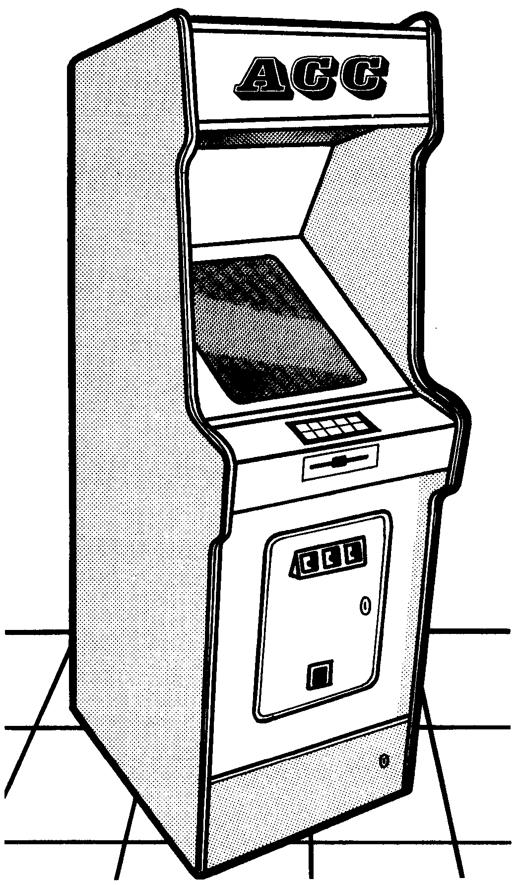
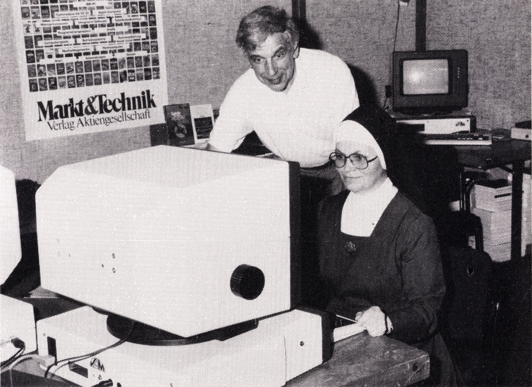
Der Computer (hier der C 64 als Leibniz I von VAM) macht vor niemanden halt. Seien es nun die Punker, die mit Begeisterung selbst programmieren, oder die Nonne, die für Ihr Kolleg nach Schulcomputern sucht.
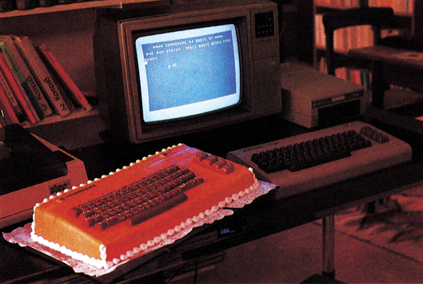
Bild. Der Quickbyte II - EPROMs programmieren wird zur SelbstverständlichkeitBild 1. Der Schaltplan. Bei den Steckern werden die Lötseiten gezeigt.
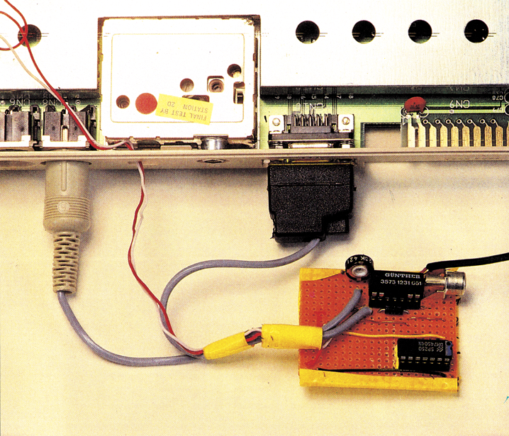
Bild 2. Die elektronische Normumschaltung. Zum Aufbau wurde eine Lochrasterplatine mit Streifen verwendet.Bild 1: Dank der neuen Befehle kann man solche Figuren ohne viel Aufwand zeichnenBild 2: Der eingebaute Sprite-Editor des C 128
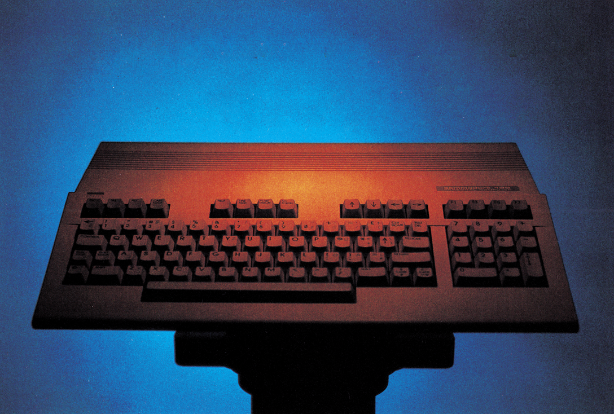
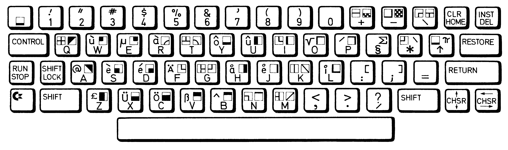
Bild 1. Tastaturbelegung des C 128 im C 64-Modus bei gedrückter DIN-Taste
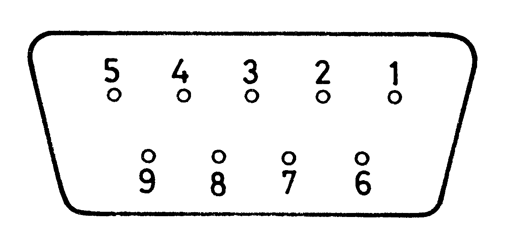
Bild 2. Pinbelegung der RGB-Buchse am C 128
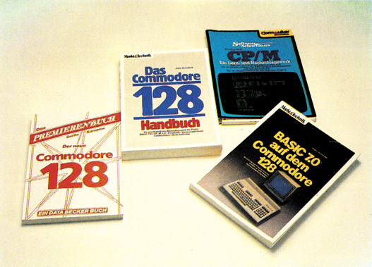
Vier Bücher für Einsteiger und InteressierteBild 1. Ein echter Profidrucker — Der RFI DP 165Bild 2. Der DP 165: Near Letter Quality-Schrift und alle FX 80-Funktionen
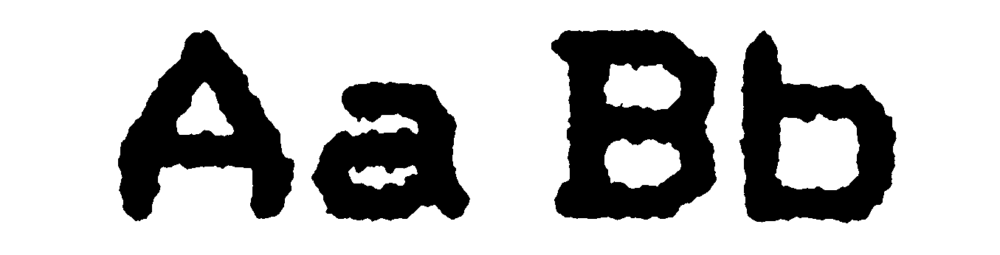
Bild 3. Erst bei fünffacher Vergrößerung
treten Einzelpunkte hervorBild 1. Der CP-80X, ein Schnittstellen-MeisterBild 2. Die vielseitigen Schriftarten des CP-80X verkleinertBild 3. Der fünffach vergrößerte Buchstabe A der NormalschriftBild 1. Der GX-80, ein Drucker mit »versteckten« FähigkeitenBild 2. Die fünffach vergrößerte NLQ-Schrift zeigt deutliche Einzelpunkte
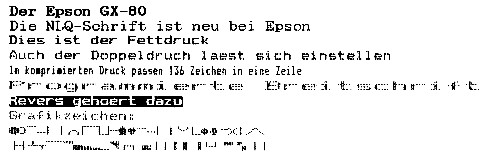
Bild 3. Die Schriften des GX-80 sind nicht alle programmierbarBild. Gar nicht mehr so teuer: Die »Traum-Laufvrerke« von Commodore
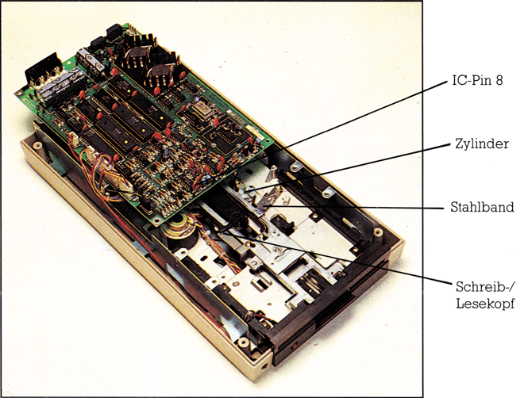
Bild 1. Hier finden Sie die wichtigsten Punkte zur Einstellung des Diskettenlaufwerks mit einem Oszilloskop
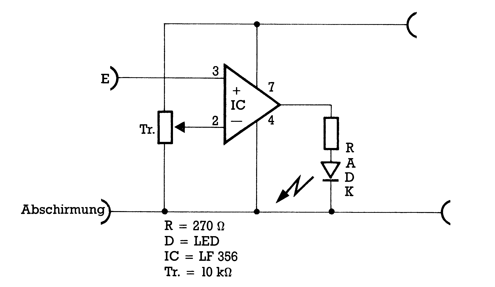
Bild 1. Schaltung des KomperatorsBild 2. Die Helligkeit der Leuchtdiode ist abhängig von der Zeitspanne, die der Komperatorausgang auf +5V liegt.Bild 3. Layout im Maßstab 1:1 (Lötseite)Bild 4. Bestückungsplan (Lotseite)Bild 5. Beim Einlöten der Leuchtdiode unbedingt auf die Polarität achten. Anode=A=längeres Beinchen oder runde Seite.Bild 6. An einem der gekennzeichneten Punkte ist der Punkt »E« (Bild 4) zu löten.Quick-Data-Drive. Eine sinnvolle Anschaffung?
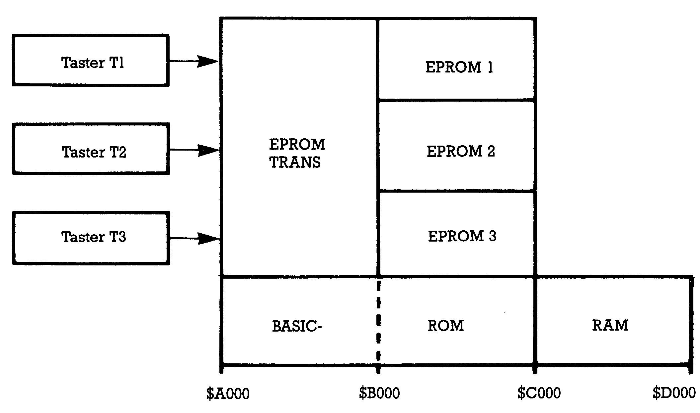
Bild 1. Speicherorganisation mit Zusatzschaltung
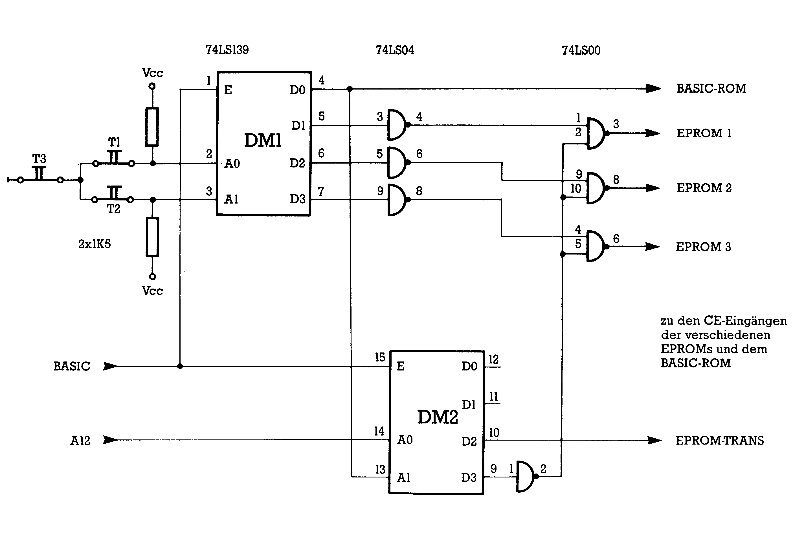
Bild 2. Zusatzschaltung zur Steuerung der verschiedenen EPROMs und dem Basic-ROM
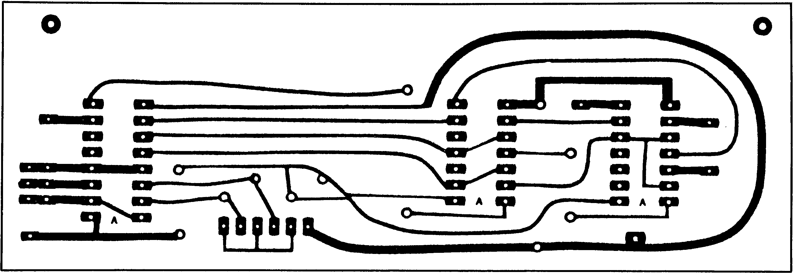
Bild 3. Layout der Adapterplatine (oben); Layout der Zusatzplatine (unten)Bild 4. Bestückungspläne: Adapterplatine (oben); Zusatzplatine (unten). Die Kerben auf den ICs zeigen immer nach unten. Abgebildet ist die jeweilige Lötseite der Platinen.
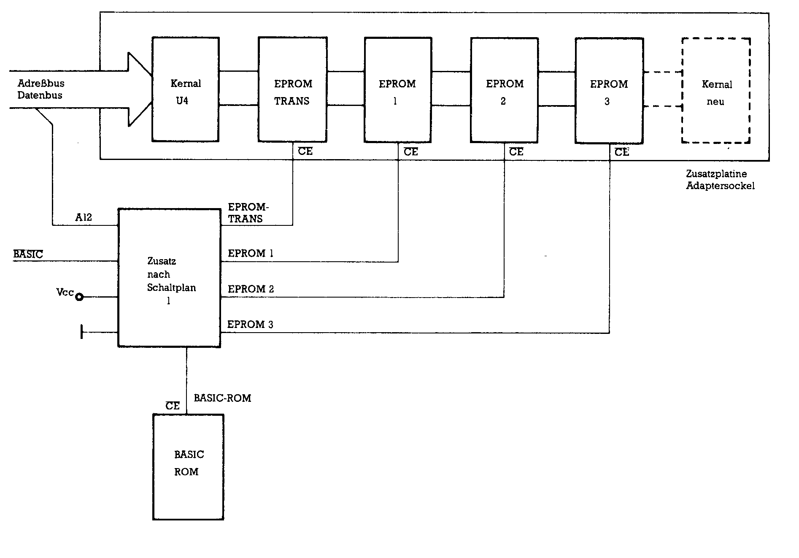
Bild 5. Komplettes Blockschaltbild zum Anschluß der Zusatzplatine
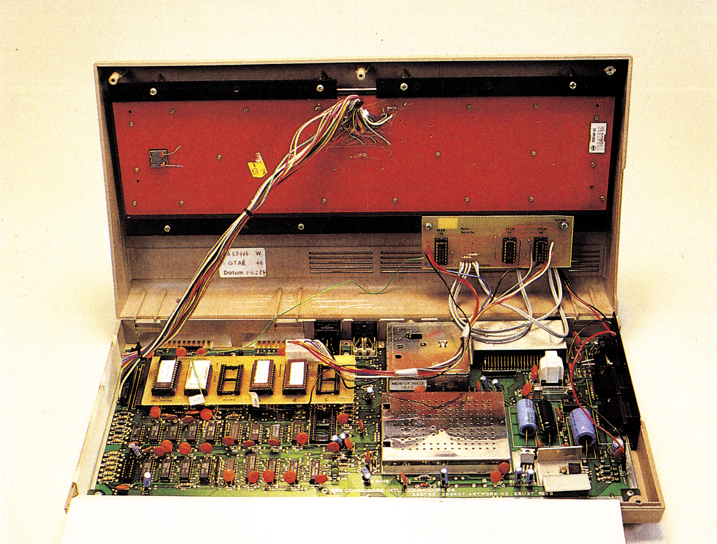
Bild 6. So wird EPROM-Trans in den C 64 eingebautBild 7. Plan zum Trennen der LeiterbahnBild 1. Schaltbild der 16-KByte-Platine
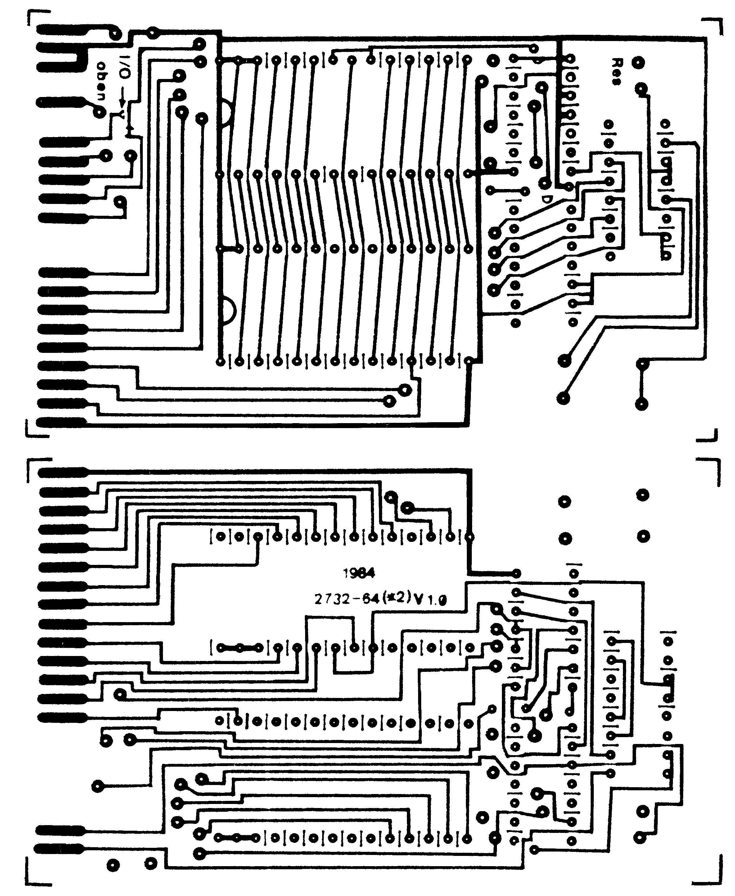
Bild 2. Das 1:1-Platinenlayout der 16-KByte-PlatineBild 3. Das 1:1-Platinenlayout der 8-KByte-Platine (Vorder- und Rückseite)Bild 4. Bestückungsplan der PlatinenBild 1. Die Schaltmatrix der C 64-Tastatur. Zum Anschluß entnehmen Sie bitte die beiden Kontakte einer Taste der Schaltmatrix und verbinden Sie über den entsprechenden TasterBild 2. Querschnitt (längs einer Leiterbahn) des AdaptersteckersBild 3. Ein Prototyp der Hex-Tastaturen. Eine von uns testweise zusammengebaute Version. Für die RETURN-Taste sollte eine doppeltgroße Tastenkappe die Eingabe erleichtern.Tabelle 1. Die Pinbelegung der Tastatur-Stiftleiste auf der C 64-PlatineBild 1. Neuer Zeichensatz für das Programm Hypra-TextBild 2. Hauptmenü mit Systemempfehlung
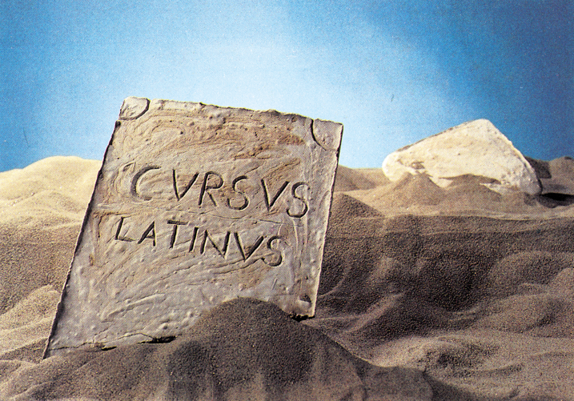
»Cursus Latinus« beim Abfragen
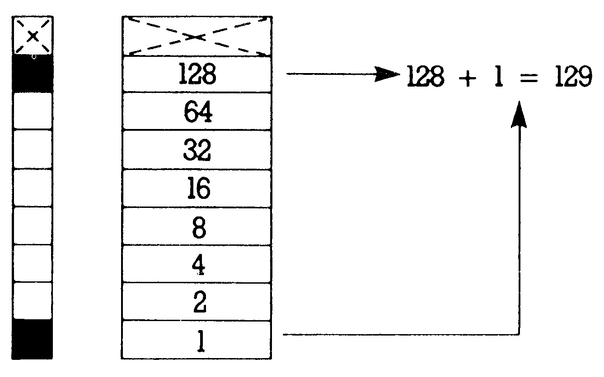
Bild 1. Jede der einzelnen Nadeln eines Druckkopfes hat ihren eigenen Zahlen-Wert
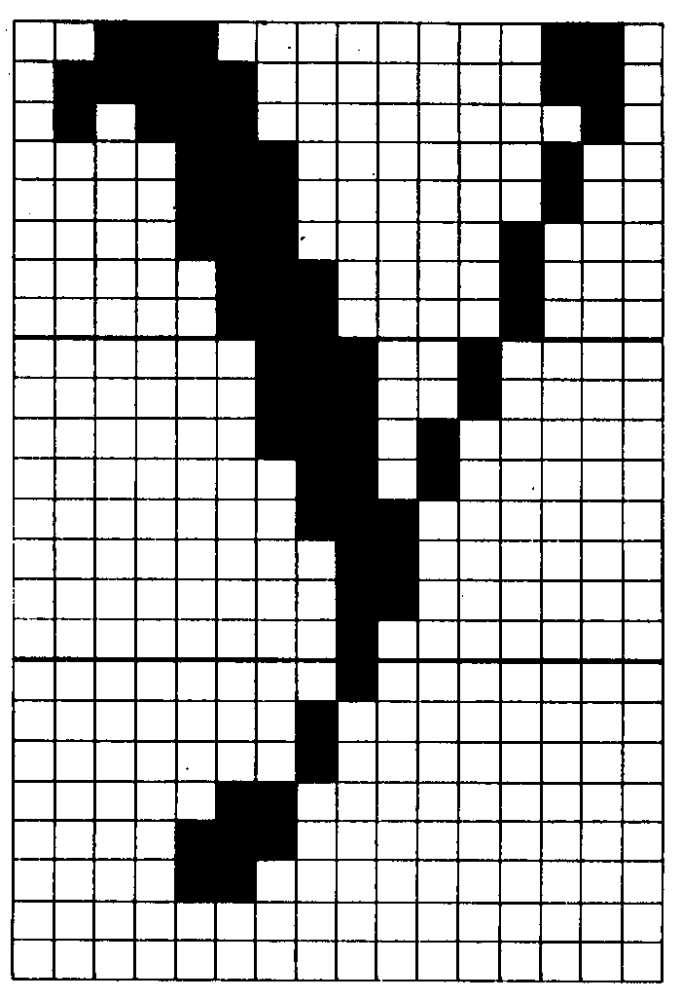
Bild 2. Jeder Buchstabe besteht aus einer 16x24-Punktematrix
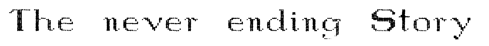
Bild 3. So sollte Ihre erste Schriftprobe aussehenBild 4. Nicht nur Märchen lassen sich drucken
a) Informationsfeld
b) Arbeitsgang
c) Wortart
d) Nummer der Vokabel
e) Hauptindex
f) Vokabel-Index
g) Bestimmungsstücke
h) Eingabeteil
Bild 1. Die Aufteilung der EingabemaskeBild 2. Eine ausgefüllte Eingabemaske
a) Informationskasten
b) Arbeitsgang
c) Wortart
d) Nummer der Vokabel
e) Bestimmungsstücke
f) Eingabeteil
g) Punkte »richtig«
h) Punkte »falsch« Bild 3. Die Aufteilung der AbfragemaskeBild 1. DATA "{Commodore-E}", 102,0,60,102,102,102,60,0 definiert das Bildschirmzeichen »ö«.Bild. Originaler und abgeänderter Zeichensatz. Aus dem A wird ein Ä.Bild 1. Sequenzer-DatenstrukturBild 3. Tonlängen bei 96 Schritten pro Ganzton
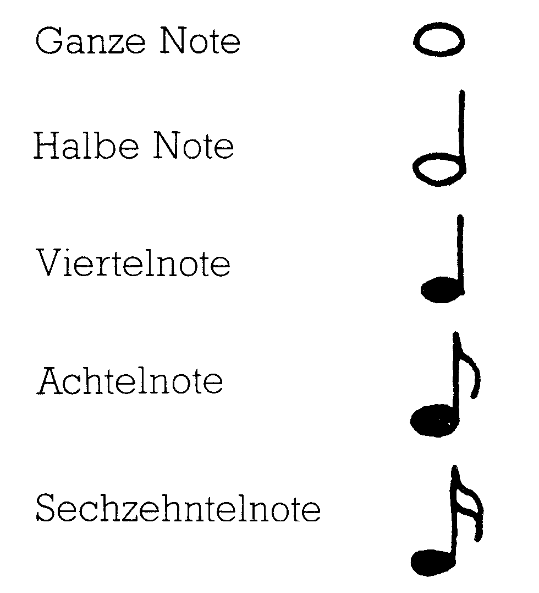
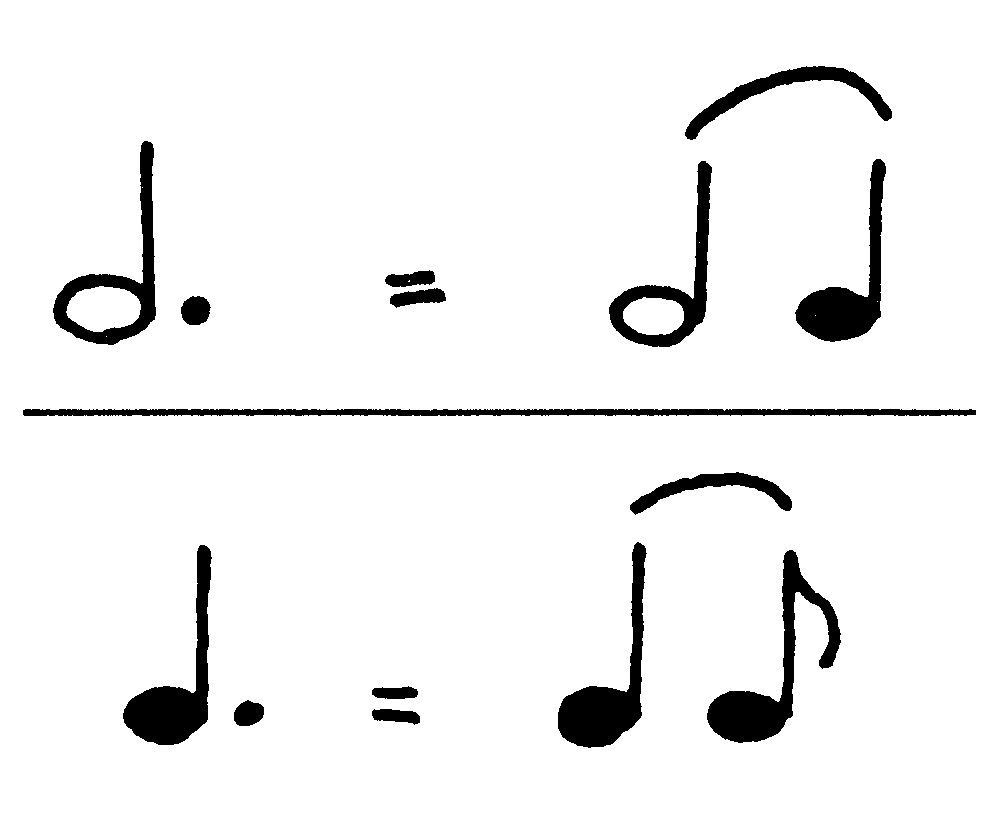
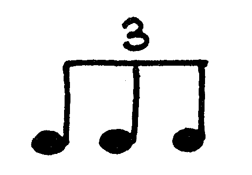
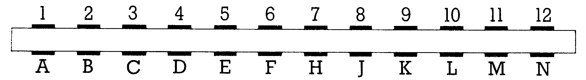
TODO Table
Bild 1. Anschlußbelegung des C 64 User-Ports. (Bei Aufsicht auf die Computerrückseite)
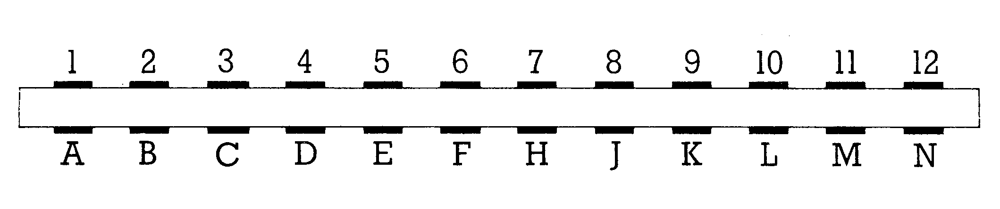
TODO Table
Bild 2. Anschlußbelegung des VC 20 User-Ports. (Bei Aufsicht auf die Computerrückseite)
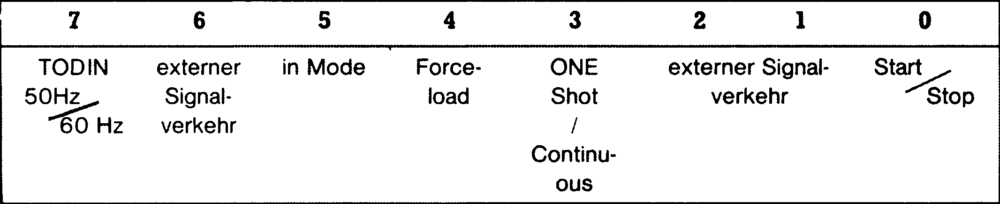
Bild 1. Das Kontrollregister des Timer ABild 2. Dasselbe für den Timer B
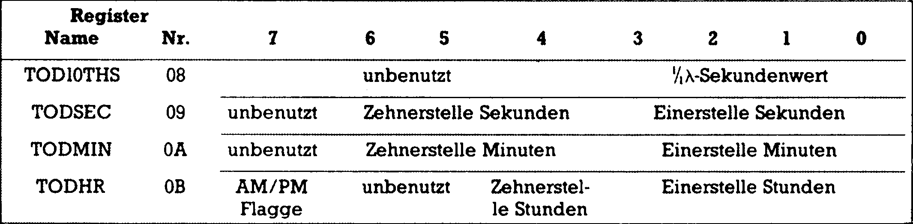
Bild 3. Die Register der EchtzeituhrenBild 1. Comal stellt sich selbst dar. Die Speicherbelegung, wie sie ein Demo-Programm auf den Bildschirm zeichnet.
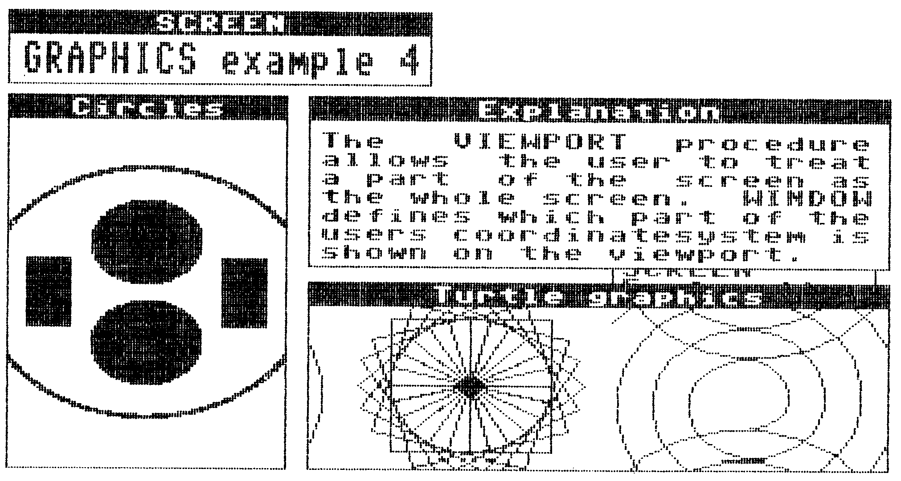
Bild 2. Ein Beispiel für die grafischen Fähigkeiten von Comal. Verschiedene Windows mit Text und Grafik wurden definiert.
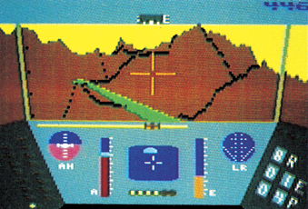
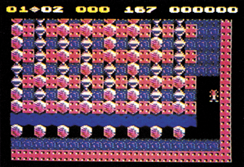
Bild 1. So kann ein Directory aussehen, das mit den hier beschriebenen Verfahren manipuliert wurde.
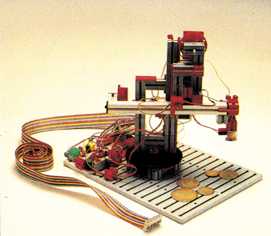
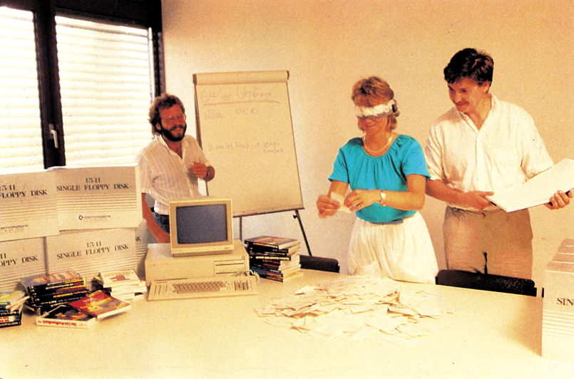
Bild. Die Ziehung der Gewinner: Unsere Glücksfee Christiane war sich ihrer Verantwortung bewußt

 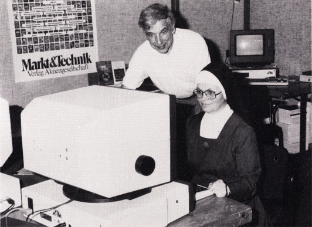
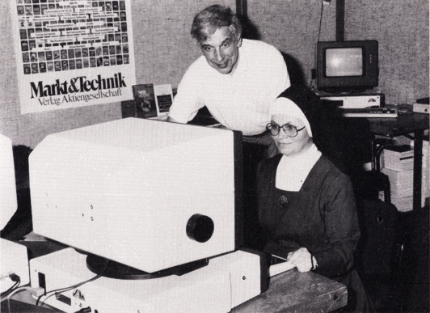


 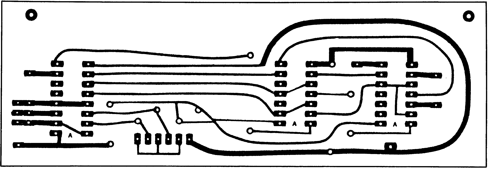
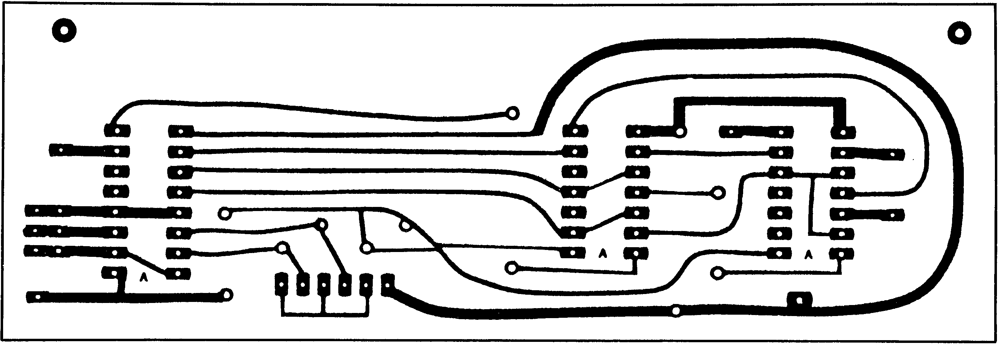


 a) Informationsfeld
a) Informationsfeld
 a) Informationskasten
a) Informationskasten